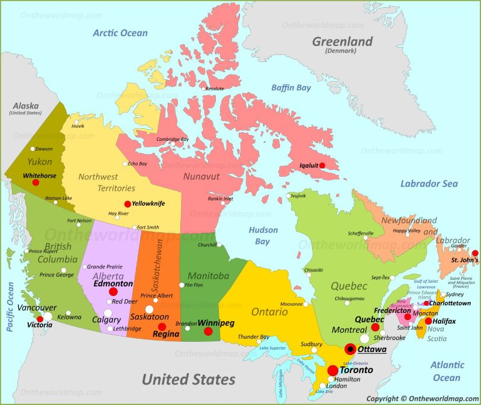
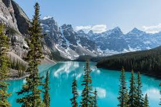
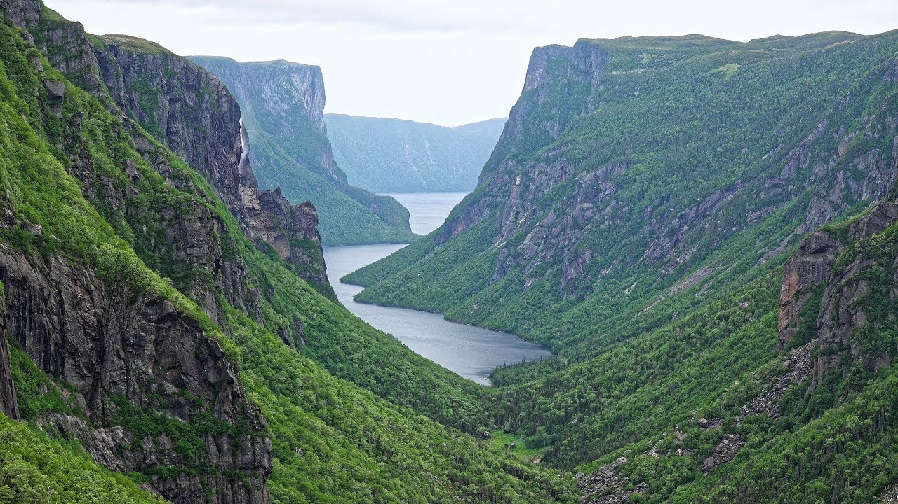
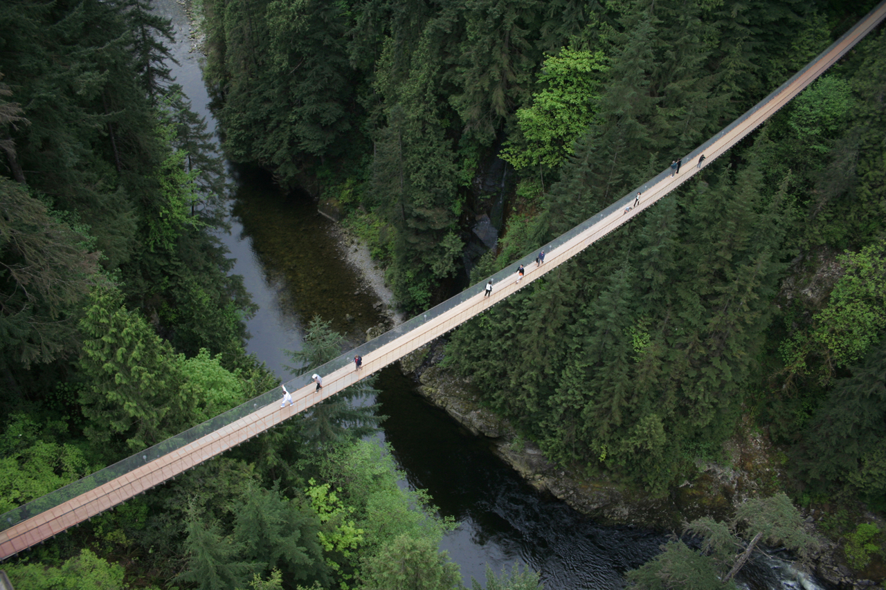

Canada
Government
Canada is a parliamentary democracy and a constitutional monarchy in the Westminster tradition, with a monarch and a prime minister who serves as the chair of the Cabinet and head of government. The country is a realm within the Commonwealth of Nations, a member of the Francophonie and officially bilingual at the federal level. It ranks among the highest in international measurements of government transparency, civil liberties, quality of life, economic freedom, and education. It is one of the world's most ethnically diverse and multicultural nations, the product of large-scale immigration from many other countries. Canada's long and complex relationship with the United States has had a significant impact on its economy and culture.[1]
History
The history of Canada covers the period from the arrival of Paleo-Indians thousands of years ago to the present day. Prior to European colonization, the lands encompassing present-day Canada were inhabited for millennia by Indigenous peoples, with distinct trade networks, spiritual beliefs, and styles of social organization. Some of these older civilizations had long faded by the time of the first European arrivals and have been discovered through archaeological investigations.[2]
Provinces and Territories
- Ontario
- Newfoundland and Labrador
- Quebec
- Manitoba
- Alberta
- Northwest Territories
- New Brunswick
- British Columbia
- Saskatchewan
- Nova Scotia
- Prince Edward Island
- Yukon
- Nunavut
- 
| Tourism | ||
|---|---|---|
| Banff National Park |  | Banff National Park is Canada's oldest national park and was established in 1885. Located in the Rocky Mountains, 110–180 kilometres west of Calgary, Banff encompasses 6,641 square kilometres of mountainous terrain |
| Gros Morne National Park |  | Gros Morne National Park is a world heritage site located on the west coast of Newfoundland. At 1,805 km2 it is the second largest national park in Atlantic Canada. |
| Parliament Hill |  |
Parliament Hill is more one of the biggest attractions in Ottawa. All the Bills are passed inside. |
| CN Tower | The CN Tower is a 553.3 m-high concrete communications and observation tower located in Downtown Toronto. | |
| Capilano Suspension Bridge |  | The Capilano Suspension Bridge is a simple suspension bridge crossing the Capilano River in the District of North Vancouver. The bridge is 140 metres long and 70 metres above the river. |